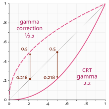

Work in progress
The content of this page was not yet updated for Godot
4.7
and may be outdated. If you know how to improve this page or you can confirm
that it's up to date, feel free to open a pull request.
High dynamic range lighting
Introduction
Normally, an artist does all the 3D modeling, then all the texturing, looks at their awesome looking model in the 3D modeling software and says "looks fantastic, ready for integration!" then goes into the game, lighting is setup and the game runs.
So at what point does all this "HDR" business come into play? To understand the answer, we need to look at how displays behave.
Your display outputs linear light ratios from some maximum to some minimum intensity. Modern game engines perform complex math on linear light values in their respective scenes. So what's the problem?
The display has a limited range of intensity, depending on the display type. The game engine renders to an unlimited range of intensity values, however. While "maximum intensity" means something to an sRGB display, it has no bearing in the game engine; there is only a potentially infinitely wide range of intensity values generated per frame of rendering.
This means that some transformation of the scene light intensity, also known as scene-referred light ratios, need to be transformed and mapped to fit within the particular output range of the chosen display. This can be most easily understood if we consider virtually photographing our game engine scene through a virtual camera. Here, our virtual camera would apply a particular camera rendering transform to the scene data, and the output would be ready for display on a particular display type.
Note
Godot supports high dynamic range output. You can read more about this on the HDR output page.
For advanced users, it is possible to get a non-tonemapped image of the viewport with full HDR data, which can then be saved to an OpenEXR file.
Computer displays
Almost all displays require a nonlinear encoding for the code values sent to them. The display in turn, using its unique transfer characteristic, "decodes" the code value into linear light ratios of output, and projects the ratios out of the uniquely colored lights at each reddish, greenish, and blueish emission site.
For a majority of computer displays, the specifications of the display are outlined in accordance with IEC 61966-2-1, also known as the 1996 sRGB specification. This specification outlines how an sRGB display is to behave, including the color of the lights in the LED pixels as well as the transfer characteristics of the input (OETF) and output (EOTF).
Not all displays use the same OETF and EOTF as a computer display. For example, television broadcast displays use the BT.1886 EOTF. However, Godot only supports sRGB and HDR displays.
The sRGB standard is based around the nonlinear relationship between the current to light output of common desktop computing CRT displays.

The mathematics of a scene-referred model require that we multiply the scene by different values to adjust the intensities and exposure to different light ranges. The transfer function of the display can't appropriately render the wider dynamic range of the game engine's scene output using the simple transfer function of the display. A more complex approach to encoding is required.
Scene linear & asset pipelines
Working in scene-linear sRGB is more complex than pressing a single switch. First, imported image assets must be converted to linear light ratios on import. Even when linearized, those assets may not be perfectly well-suited for use as textures, depending on how they were generated.
There are two ways to do this:
sRGB transfer function to display linear ratios on image import
This is the easiest method of using sRGB assets, but it's not the most ideal. One issue with this is loss of quality. Using 8 bits per channel to represent linear light ratios is not sufficient to quantize the values correctly. These textures may also be compressed later, which can exacerbate the problem.
Hardware sRGB transfer function to display linear conversion
The GPU will do the conversion after reading the texel using floating-point. This works fine on PC and consoles, but most mobile devices don't support it, or they don't support it on compressed texture formats (iOS for example).
Scene linear to display-referred nonlinear
After all the rendering is done, the scene linear render requires transforming to a suitable output such as an sRGB display. To do this, enable sRGB conversion in the current Environment (more on that below).
Keep in mind that the sRGB -> Display Linear and Display Linear -> sRGB conversions must always be both enabled. Failing to enable one of them will result in horrible visuals suitable only for avant-garde experimental indie games.
Parameters of HDR
HDR settings can be found in the Environment resource. Most of the time, these are found inside a WorldEnvironment node or set in a Camera node. For more information, see Environment and post-processing.